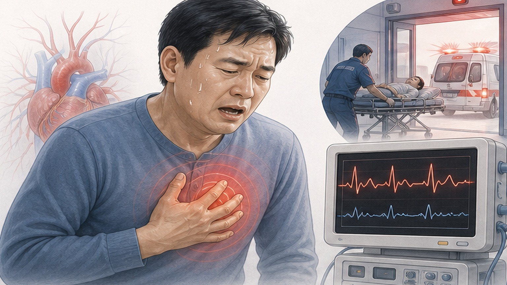
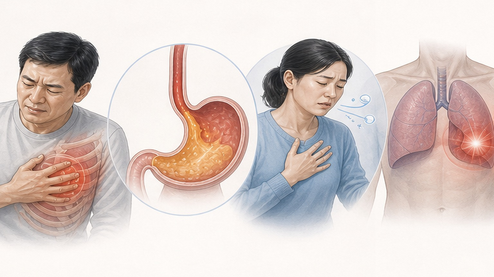
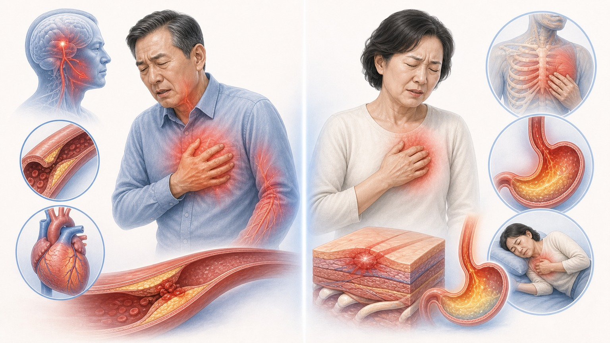
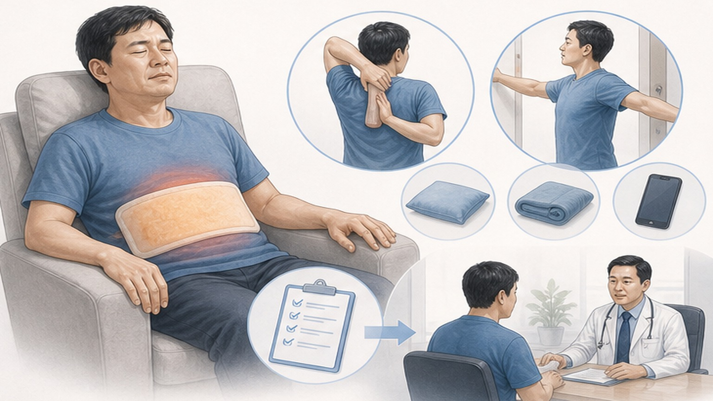

PATIENT EDUCATION · CARDIOLOGY
흉통,
올바르게 이해하고 안심하기
가슴이 아플 때, 어떤 경우에 걱정해야 하고 어떤 경우에 안심해도 되는지 알아봅니다
02
CHAPTER 01 · OVERVIEW
가슴이 아프다고 모두 심장 문제는 아닙니다
일차의료기관 내원 흉통의 96%는 비심인성 (Non-cardiac) 원인입니다
96%
일차의료기관에서 호소하는 흉통의 약 96%는 심장이 원인이 아닌 비심인성 흉통 — 대부분은 근육·관절 또는 소화기 문제입니다.
Why differentiation matters
그러나 나머지 약 2~4%인 심장이 원인인 흉통은 급성 심근경색·대동맥 박리·폐색전증 등 생명을 위협할 수 있는 응급 상황입니다. 위험 신호를 정확히 알면 안심할 흉통과 즉시 응급실로 가야 할 흉통을 구별할 수 있습니다.
03
CHAPTER 01 · DEFINITION
흉통 (Chest Pain) 이란
가슴 통증의 다양한 원인과 광범위한 임상 스펙트럼
가슴, 어깨, 팔, 목, 등, 상복부, 턱 등 광범위한 부위의 압박감·조임·답답함·호흡곤란·피로감을 모두 포함하는 넓은 개념입니다.
"통증"이라는 단어 하나로는 부족할 만큼 환자마다 호소가 다양합니다. 어떤 분은 짓누르는 느낌으로, 어떤 분은 타는 듯한 느낌으로, 또 어떤 분은 단순한 답답함으로 표현합니다. 정확한 진단의 첫걸음은 통증의 양상·위치·동반 증상을 자세히 파악하는 것입니다.
Cardiac cause
2 – 4%
심장 자체가 원인인 흉통 — 적지만 가장 위험합니다.
Musculoskeletal cause
약 50%
가장 흔한 원인 — 근육·관절·갈비뼈 주변 통증.
04
CHAPTER 02 · FATAL CAUSES
즉시 응급실에 가야 하는 6대 치명적 원인
생명을 위협할 수 있는 흉통 — 한 가지라도 의심되면 지체 없이 119
RED FLAG · 01
급성 심근경색 (ACS)
가슴 중앙을 짓누르는 압박감, 어깨·턱·팔로 뻗치는 방사통, 식은땀·구역질, 운동 시 악화·휴식 시 완화, 5분 이상 지속되는 통증.
RED FLAG · 02
대동맥 박리 (Aortic Dissection)
예고 없이 갑작스러운 극심한 통증, 찢어지는·칼로 베는 듯한 느낌, 등이나 목으로 통증이 이동, 양팔 혈압이 크게 차이남, 실신·시력 이상 동반 가능.
RED FLAG · 03
폐색전증 (Pulmonary Embolism)
갑작스러운 호흡곤란, 숨 쉴 때 찌르는 날카로운 통증, 빈맥(심장이 빨리 뜀), 한쪽 다리 부종·통증(혈전 징후), 최근 수술·장기 침상 안정 병력.
RED FLAG · 04
긴장성 기흉 (Tension Pneumothorax)
갑작스러운 한쪽 가슴 통증, 숨 쉴 때 극심하게 악화, 심한 호흡곤란·청색증, 한쪽 가슴에서 숨소리 안 들림, 키 크고 마른 체형에서 호발.
RED FLAG · 05
심낭 압전 / 심낭염
누우면 악화, 앞으로 숙이면 완화, 숨 쉴 때·기침할 때 악화, 심장 소리가 작고 멀게 들림, 목의 혈관이 심하게 부풀어 오름, 저혈압 동반 시 매우 위험.
RED FLAG · 06
식도 파열 (Boerhaave)
심한 구토 직후 극심한 흉통, 등으로 뻗치는 찢어지는 통증, 목·가슴 피부 아래 뽀드득 소리, 삼키기 어려움, 내시경 시술 직후에도 발생 가능.

05
CHAPTER 03 · HIGH-RISK GROUPS
이런 분들은 특히 주의하세요
당뇨병·노인·여성 환자는 비전형적 증상으로 심장 응급이 숨어 있을 수 있습니다
GROUP · 01
당뇨병 환자
신경 손상으로 통증을 못 느낄 수 있어 가슴이 안 아파도 심장 위험 가능. 갑작스러운 호흡곤란이 유일한 증상, 설명 안 되는 극심한 피로감, 잦은 실신이나 인지 기능 혼돈에 주의.
GROUP · 02
노인 환자 (65세 이상)
전형적 흉통 대신 어지러움으로 내원하는 경우가 많습니다. 활동 시 악화되는 호흡곤란, 소화불량·체한 느낌으로 오인, 급격한 전신 쇠약감, 원인 모를 구역·구토 등으로 표현됩니다.
GROUP · 03
여성 환자
전형적 가슴 통증이 없을 수 있으며, 턱·목·등 사이의 모호한 불쾌감, 수주 전부터 극심한 피로감, 수면 장애·심한 불안감, 휴식 중 갑작스러운 호흡곤란으로 나타날 수 있습니다.
TYPICAL · 04
일반적 심근경색 — 통증
가슴 중앙을 짓누르는 압박감, 식은땀(교감신경 자극), 어깨·턱·팔로 뻗치는 방사통이 전형적입니다. 5분 이상 지속되며 휴식으로도 잘 호전되지 않습니다.
ATYPICAL · 05
특수 환자군 — 호흡 위주
통증은 거의 없거나 모호하고, 호흡곤란이 주 증상으로 나타나는 경우가 많습니다. 평소와 다른 새로운 호흡곤란은 반드시 검사가 필요합니다.
ATYPICAL · 06
특수 환자군 — 전신 증상
설명 안 되는 피로·쇠약·수면장애·체한 느낌·소화불량이 주 증상으로 나타납니다. 이런 분들은 흉통이 없어도 심전도와 심장 효소 검사가 권고됩니다.
06
CHAPTER 04 · NON-CARDIAC CAUSES
심장 문제가 아닌 흉통의 4가지 원인
대부분의 흉통은 이 네 가지 영역에서 시작됩니다
CAUSE · 01 · 약 50%
근골격계 흉통 (Musculoskeletal)
아픈 곳을 손가락으로 정확히 짚을 수 있고, 자세 변경·몸 비틀기·기침 시 악화. 의사가 눌렀을 때 같은 통증이 재현되면 핵심 단서. 발목 염좌처럼 휴식·소염제로 호전됩니다.
CAUSE · 02 · 약 10–20%
위장관 흉통 (GI Reflux)
속쓰림, 타는 듯한 흉골 하부 통증, 과식·기름진 음식 후 악화, 식후 눕거나 구부리면 악화, 입에서 신맛·쓴맛, 위산억제제 복용 시 호전이 핵심 단서입니다.
CAUSE · 03 · 약 10–18%
호흡기계 흉통 (Pulmonary)
폐렴·기관지염·흉막염·천식 등이 원인. 숨 깊이 들이마실 때나 기침할 때 찌르는 통증, 발열·오한·화농성 가래 동반, 빈호흡(분당 20회 이상), 청진 시 비정상 호흡음.
CAUSE · 04 · 약 10–18%
심인성 흉통 (Psychogenic)
공황장애·불안장애가 원인. 극심한 불안감, 심장이 빨리 뜀, 손발·입 주위 저림(과호흡 때문). 심장 검사는 모두 정상이며, 통증은 가짜가 아니라 실제로 아픈 것입니다.

07
CHAPTER 05 · HOW TO TELL APART
심장 흉통 vs 비심장 흉통 구별 포인트
통증 양상·동반 증상으로 위험도를 가늠할 수 있습니다
!
심장이 원인일 가능성
- 가슴 중앙을 짓누르는 압박감
- 어깨·턱·팔로 뻗치는 방사통
- 식은땀·구역질이 동반될 때
- 운동 시 악화, 휴식 시 완화
- 5분 이상 지속되는 통증
- 호흡곤란·실신·어지럼증 동반
+
안심해도 좋은 가능성
- 손가락으로 정확히 짚을 수 있는 부위
- 자세를 바꾸거나 누르면 통증 변화
- 속쓰림·신물 등 위장 증상 동반
- 휴식·소염제·제산제로 호전
- 몇 초간 짧게 스쳐 지나가는 통증
- 몸을 비틀거나 기침할 때만 악화

08
CHAPTER 06 · SELF-CARE TIMELINE
근골격계 흉통, 집에서 이렇게 관리하세요
비심인성 흉통의 4단계 자가 관리 — 진료 후 처방받은 분에게 권장
1
초기 1~3일차 · 냉찜질
15~20분씩 냉찜질로 염증·부종 완화. 처방받은 소염제 규칙적 복용, 충분한 안정.
2
4~7일차 · 온찜질로 전환
온찜질로 혈액순환 촉진. 가벼운 스트레칭·심호흡 운동 시작, 통증 부위는 베개로 편안하게 지지.
3
1~2주차 · 서서히 활동 증가
통증 모니터링·호전 확인. 통증 유발 동작은 일시 중단, 한 시간에 한 번 깊은 심호흡 권장.
4
호전 없으면 · 재방문
2주 후에도 통증이 지속되면 재방문 — 추가 검사·전문의 의뢰가 필요합니다.
주의
갈비뼈를 복대·붕대로 꽉 감싸지 마세요(폐렴 위험). 통증이 줄지 않거나 호흡곤란·식은땀이 새로 생기면 즉시 119에 연락하세요.
09
CHAPTER 07 · DO & DON'T
집에서의 자가 관리법
비심인성 흉통일 때 지켜야 할 것과 절대 피해야 할 것
+
이렇게 하세요 (DO)
- 초기 3일간은 냉찜질로 염증 완화
- 3일 이후에는 온찜질로 혈액순환 촉진
- 처방받은 소염진통제 규칙적 복용
- 한 시간에 한 번 깊은 심호흡 운동
- 통증 부위를 베개로 편안하게 지지
- 통증 유발 동작은 일시적으로 중단
−
이것은 피하세요 (DON'T)
- 갈비뼈를 복대·붕대로 꽉 감싸기 (폐렴 위험)
- 통증 줄이려고 얕은 숨만 쉬기 (폐합병증)
- 무거운 물건 들기·상체 비틀기
- 통증을 참고 격렬한 운동하기
- 증상 자가 판단하여 병원 방문 미루기
- 처방 없이 임의로 진통제 장기 복용

10
CHAPTER 08 · CALL 119 NOW
이럴 때는 즉시 119에 연락하세요
아래 증상 중 하나라도 해당되면 지체 없이 응급실로 — 기존 처방약 무시하고 즉시 119
!
쥐어짜는 가슴 통증이 5분 이상 지속
니트로글리세린이나 휴식으로도 호전 안 됨 — 급성 심근경색의 강력한 신호입니다.
!
어깨·팔·턱·목으로 뻗치는 방사통
특히 좌측 팔의 안쪽(척측)으로 퍼지는 통증은 심장 허혈을 강하게 시사합니다.
!
식은땀이 동반된 흉통
자율신경계 과항진의 징후 — 심근 허혈을 시사하는 중요한 동반 증상입니다.
!
갑작스럽고 심각한 호흡곤란
가슴 통증 없이도 호흡곤란만 나타날 수 있음 — 폐색전증·심부전 가능성도 있습니다.
!
실신·현기증·의식 혼돈
뇌 혈류 저하의 징후 — 즉각적인 응급 처치가 필요합니다.
11
CHAPTER 09 · ACTION
오늘 꼭 기억할 핵심 8가지
흉통은 대부분 안전하지만, 위험 신호를 알면 내 몸을 더 잘 지킬 수 있습니다
01
가슴이 아프다고 모두 심장병은 아닙니다 (96%는 비심인성)
02
눌러서 같은 통증이 재현되면 근골격계 (발목 삔 것과 같음)
03
위산억제제로 호전되면 위장관 문제 가능성
04
심장 검사 정상이면 안심 — 통증은 진짜이나 생명 위협은 아님
05
초기 3일 냉찜질 → 이후 온찜질·소염제·심호흡 운동
06
갈비뼈 압박·얕은 숨쉬기 금지 (폐렴 위험)
07
쥐어짜는 통증 5분 이상 + 방사통·식은땀·호흡곤란 → 즉시 119
08
통증 양상이 바뀌거나 2주 내 호전 없으면 재방문
END OF DECK · THANK YOU
위험 신호를 알면
내 몸을 더 잘 지킬 수 있습니다
가슴이 아플 때, 함께 고민하고 결정하겠습니다 — 궁금한 점은 언제든 문의해 주세요
Phone
031-893-4560
Address
경기 용인 수지구
광교중앙로 298, 4층
광교중앙로 298, 4층
Hours
평일 08:30~18:30
토요일 08:30~13:30
토요일 08:30~13:30
SCAN TO REVISIT
집에서 다시 보기
QR을 스캔하면 핸드폰에서
같은 자료를 다시 볼 수 있어요
같은 자료를 다시 볼 수 있어요